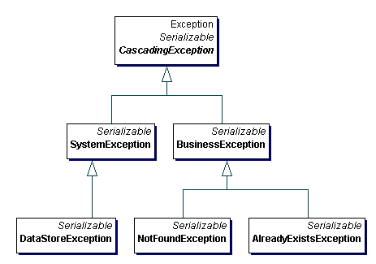

|
|||||||||
| PREV PACKAGE NEXT PACKAGE | FRAMES NO FRAMES | ||||||||
See:
Description
| Exception Summary | |
| AlreadyExistsException | Extends Business Exception to indicate that the specified item already exists in the target store. |
| BusinessException | Indicates an application level error, or recoverable error has occured. |
| CascadingException | Provides the base functionality for all Exception classes defined in the error package. |
| ConfigurationException | |
| DataStoreException | Extends SystemException to indicate an error that occured while attempting to interact with a data store. |
| NotFoundException | Extends BusinessException to indicate that the specified item(s) were not found. |
| SystemException | Indicates that a serious error has occured and could not be recoved. |
Provides set of classes that extend java.lang.Exception to provide categorization, nesting, and formatting of Exceptions.

CascadingException allows exceptions to be chained together, such that errors can be 'rolled up' into higher level errors without losing the detailed information from their lowest level. CascadingException
is currently written using JDK 1.3.1. JDK 1.4 provides some of the same
functionality provided here. When JDK 1.4 becomes widely accepted, this class
will be modified to utilize the new functionality provided by JDK 1.4. However,
the changes should only effect the implementation of this class, and not its
interface. This class will continue to provide functionality not provided in the
1.4 exception class, and will continue to be the base class for all Exceptions
in this package.
The second tier provides basic exception categories. These exceptions (BusinessException and SystemException) are used as the base classes for all exceptions defined in this package. These classes can be used directly, or subclassed to provide extended categorization. Typically, all types of exceptions in an application descend from one of these two types, making further categories at this fundamental level unnecessary.
Additionally, because these basic categorized exceptions are extended from CascadingException, Java and third party exceptions can be nested in these exceptions to be passed across public interfaces. This allows the implementations of classes to change and still notify the calling class of an error without modifying the interface. All the information associated with the original exception is stored in the newly created exception and can be retrieved by the calling class.
The third tier provides a set of commonly-used exceptions which extend from the second tier exceptions. These are provided for convenience, and additional classes will be added as more commonly-used exceptions are identified.
This package also provides the following formatting features:
Error messages can also be formatted using the MessageFormat class. The constructors for all exceptions have been overloaded to accept an array of Objects. If this parameter is set, the message (either the string, or the text representation of the error code) will be parsed using the MessageFormat class, and the specified Object array.
try {
connection = DatabaseConnectionService.getDatabaseConnection();
//Prepare the SQL Call
...
//Execute the Query
rs = ps.executeQuery();
}
catch( SQLException sqlException ) {
//Catch the Data Store specific exception and encapsulate it in a DataStoreException
throw new DataStoreException( "my error message", sqlException );
}
finally {
//Release the resources
}
The following is an example of how a NotFoundException should be used:
try {
connection = DatabaseConnectionService.getDatabaseConnection();
//Prepare the SQL Call
...
//Execute the Query
rs = ps.executeQuery();
if( !rs.next() ) {
//The Resultset did not return any result, so throw a NotFoundException
throw new NotFoundException( "my error message" );
}
...
}
|
|||||||||
| PREV PACKAGE NEXT PACKAGE | FRAMES NO FRAMES | ||||||||